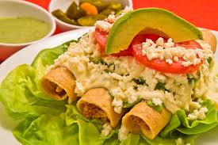
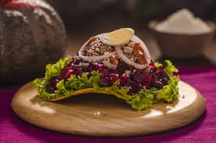

* Popular
Recetas Destacadas
 • Picante
• Picante
Shuco Guatemalteco
Un platillo muy consumido pan con salchica, capsup, varios tipos de adereso con repollo.
Ver Receta

Saludable
Recetas caseras con amor
Recetas tradicionales, técnicas modernas y sabores inolvidables
Explorar Recetas
• Picante
Un platillo muy consumido pan con salchica, capsup, varios tipos de adereso con repollo.
Ver Receta3 recetas
¡Hola! Soy Gael , un apasionado de la cocina desde que tengo memoria. Crecí viendo a mi abuela preparar platillos increibles y ahora quiero compartir ese conocimiento contigo.
Mi misión es demostrar que cocinar puede ser divertido, creativo y accesible pa ra todos.